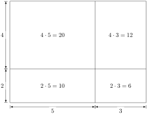
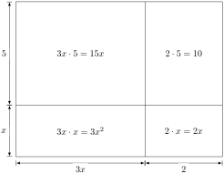

The mathematical expression for simplifying \((a+b)\cdot(c+d)\) can look a bit mysterious. To understand why it looks the way it does, it is helpful to remember the connection between multiplication and area.
For example, if you have a rectangle of side lengths \(5\) and \(2\text{,}\) then the rectangle has area \(5\cdot 2 = 10\text{.}\) Visually, we have the following picture.
Suppose instead we increase the lengths of the sides to \(8=5+3\) and \(6 = 2+4\text{.}\) Let’s see how this changes our area.

The area given by \((5+3)\cdot(2+4)\) has four regions, each with their own area
\begin{equation*}
5\cdot 2 + 5\cdot 4 + 3 \cdot 2 + 3\cdot 4
\end{equation*}
The same mathematical pattern occurs when you have variables in your side lenghts. Suppose you have a rectangle with one side \(3x + 2\) and another side \(x+5\text{.}\) Then the area of the rectangle still has four regions

Adding up the areas of those regions gives us the same thing as FOIL-ing
\begin{equation*}
(3x+2)(x+5) = (3x\cdot x) + (3x\cdot 5) + (2\cdot x) + (2\cdot 5)
\end{equation*}
Simplifying that down we get
\begin{equation*}
(3x+2)(x+5) = 3x^2 + 17x + 10
\end{equation*}
Of course, with practice, it is faster and easier to learn to use the formula for FOIL-ing than would be to go through the area derivation each time.